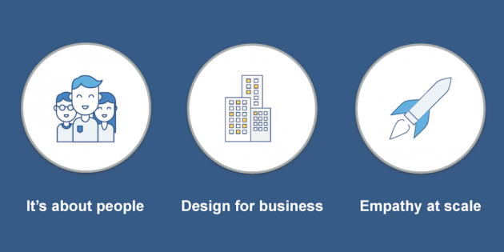

My unique background in user interface and graphic design derives from my training and experience as a United States Soldier and student at the University of Texas at Arlington. For 7 years, the U.S. Army provided a plethora of challenging and austere projects with high expectations and short deadlines. I traveled around the world twice, to Djibouti Africa and Kabul Afghanistan.I worked side by side with high ranking diplomats, goverment officials, and military officers to create posters, pamphlets, and various documents to increase communication in global partnership. As the creative director and lead designer of the product development center at 7th Special Forces Group, I supervised and managed all communication products and day to day operations. My office provided digital and print support for the entire group of over 3500 Soldiers; to include management of social media platforms, capturing headshot photos, brochure design, video production, signage, informational data handouts, and event program design. I've had the distinguished opportunity to photograph some of the United States' finest Special Forces Soldiers in their element. I conducted operations and missions alongside their detachments in preparation for their global initiative of helping oppressed societies. My published work is also recognized by multiple Department of Defense platforms; including websites, pamphlets, posters, logos, and magazines. I am a senior at the University of Texas at Arlington studying Communication Technology. I bring my expertise and wealth of knowledge about empathetic design to help businesses confidently build their communication with internal and external users.

Empathic design is the process of developing an understanding of users, not just their overt needs, but of their constraints, practices, problem-solving approaches, contexts, and the interrelations between people as a whole. The aim of researching users in such a way is to help designers identify their users' underlying needs (i.e. those that are not instantly apparent or accessible through questioning alone). Once we have established these needs we can develop new problem-solving approaches that accommodate the users' constraints and exploit (in a nice way) their capabilities. The ultimate aim is to improve the user's or consumer's experience by tailoring the product to their explicit, implicit, and latent needs.
